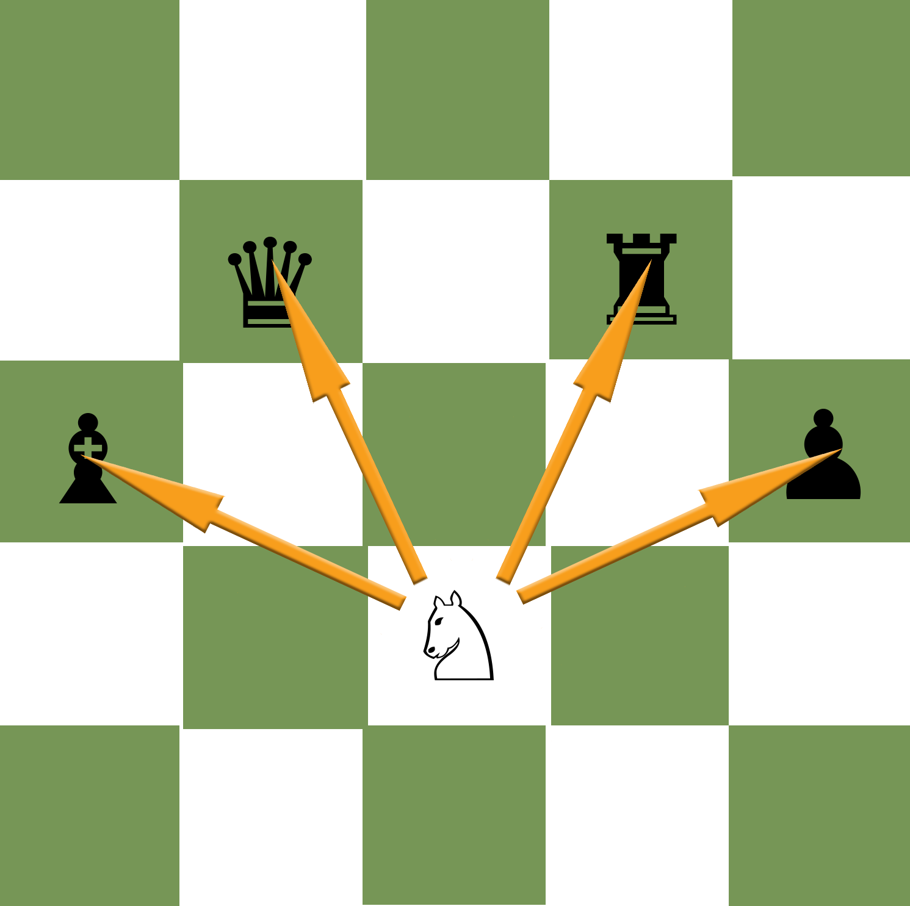
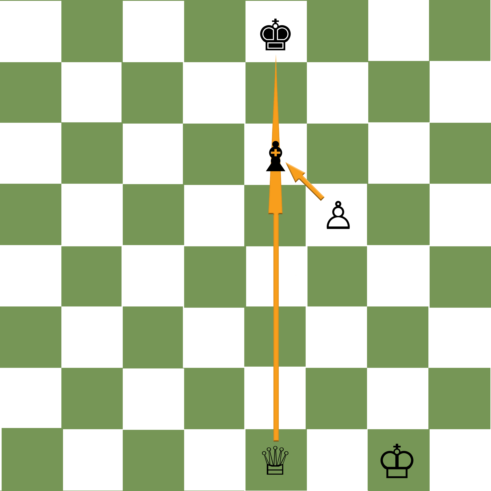
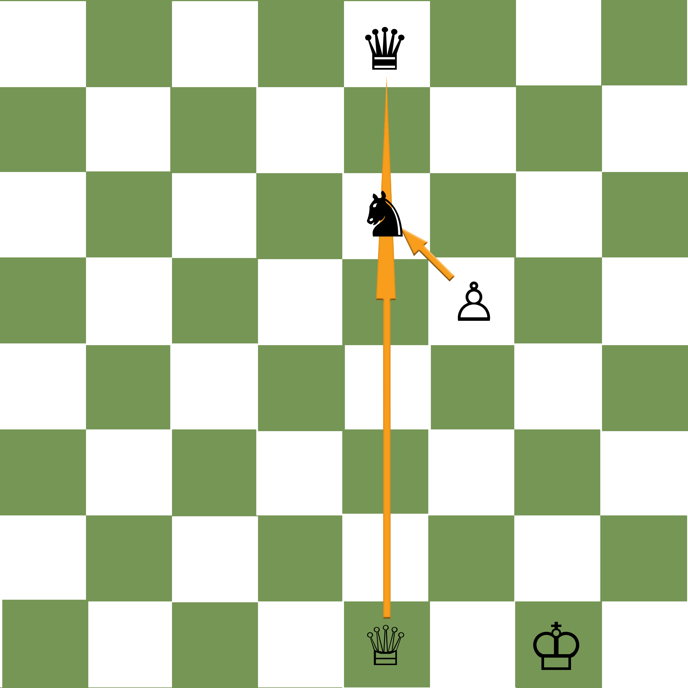
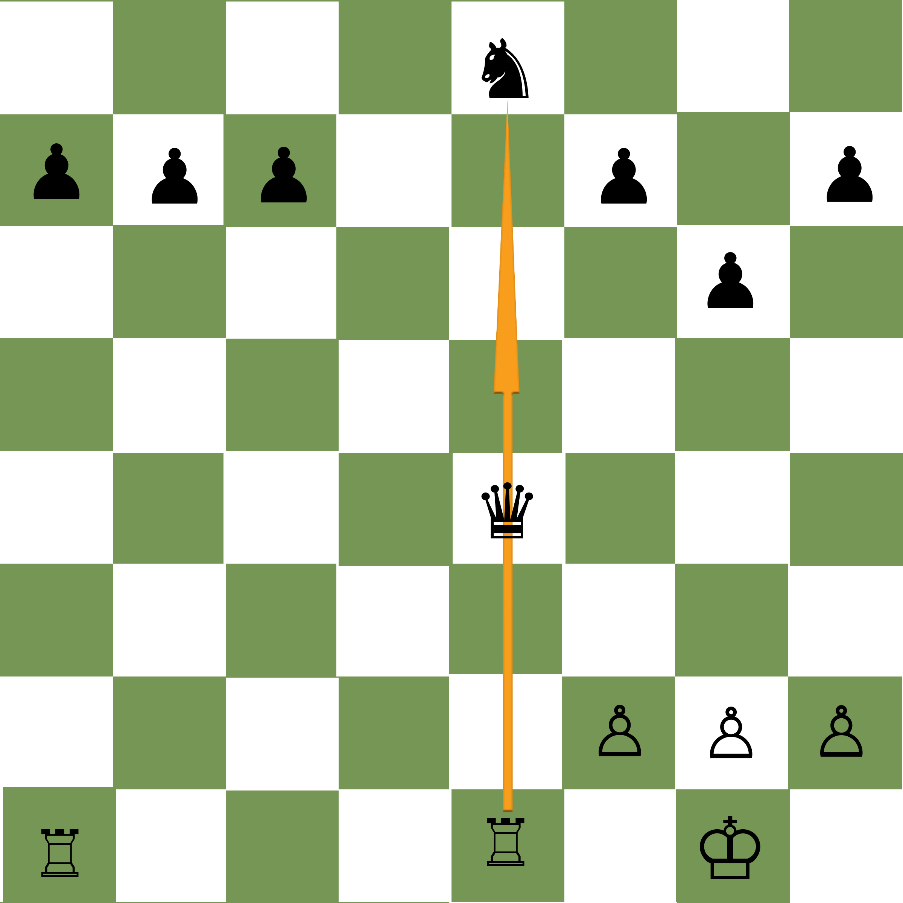

Basic Tactics
Fork
A fork is when one piece or pawn attacks two or more pieces at the same time. While all pieces can fork, none are quite as adept or as "famous" as the knight.
Pin
A pin comes in two types: Absolute and Relative. While it's not important to remember what the name of these pins are, know that if for example a rook, bishop or queen is attacking a piece where if it were to move, it would place the king in check, it legally can't move! In that example it would be an absolute pin. Using an absolute pin and then attacking the pin piece with a lesser valued piece or pawn is a great way to get ahead in the game.
A relative pin would be a long range piece like the queen, rook or bishop pinning a bishop, knight, pawn or rook to a queen. While it could move, the player would be giving up their best piece. This is an example of a relative pin.
Skewer
A skewer is when you attack a more valuable piece with a lesser valued piece forcing it to move away, allowing you to attack an undefended or under defended piece behind it.
